Multiple branches, one repo, side by side
A linked worktree is a real checkout of your repo on a different branch — same .git, different working tree. Git Navigator creates worktrees from any commit in the graph, switches between them with the active-worktree button, and deletes them (with the underlying branch if you want) — all without leaving the window.

Worktrees the way you actually use them
Create from any commit on the graph
Hover any commit, click New… → Worktree, and Git Navigator opens a dialog for the branch name, the worktree path, the ignored files to link in, and an optional setup command (think npm install).
Switch with the active button
Each worktree gets its own row at the top of the graph. The radio on each row makes that worktree active — the graph, the uncommitted-changes panel, and the refs overlay all rebuild around the new checkout.
Delete safely, with branch cleanup
Remove a worktree from the Worktrees overlay (More → Worktrees). The confirmation lets you also delete the underlying branch in the same step, with a warning if it isn't fully merged.
Worktree-scoped uncommitted changes
Every dirty file lives on a single worktree. Git Navigator scopes the uncommitted-changes panel to whichever worktree is active so the picture is never mixed.
Walkthrough
-

Step 1. Start from the graph in any worktree. The header shows which checkout is active; the rows above the graph are the other linked worktrees you already have. -
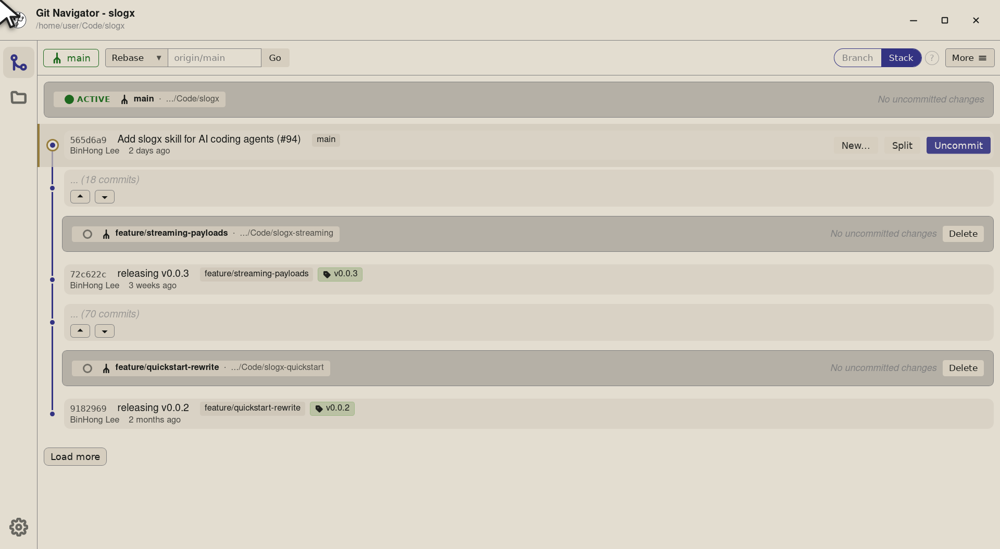
Step 2. Pick the commit you want the new worktree to start from. Hover the row and a New… button appears — Git Navigator lets you branch from any commit, not just a tip. -
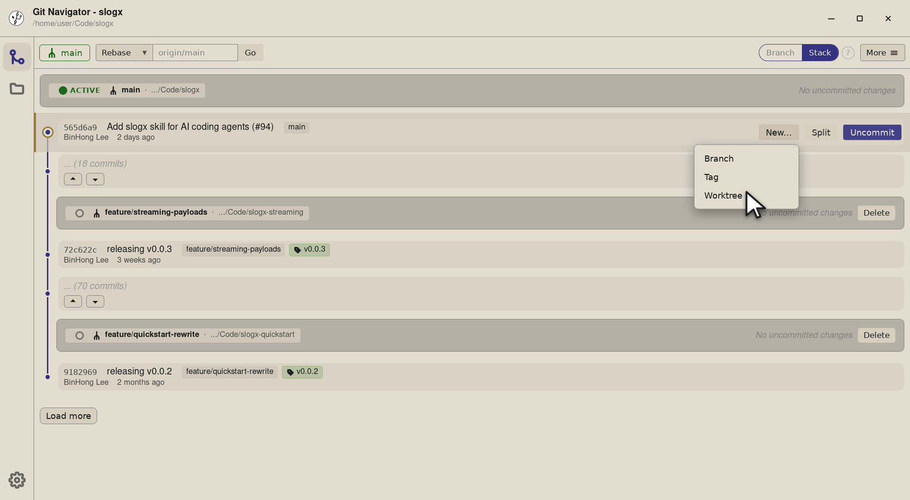
Step 3. Click New… and pick Worktree. The same dropdown also offers Branch and Tag from the same commit, so the worktree dialog stays out of the way until you actually want it. -
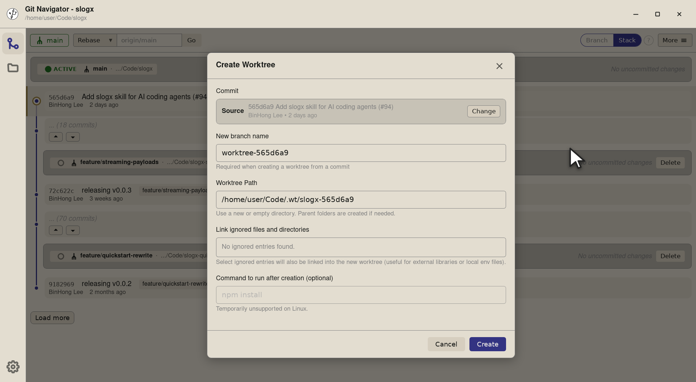
Step 4. The Create Worktree dialog opens onto the commit you picked. The Source field at the top names the starting point so you know what you're branching from. -
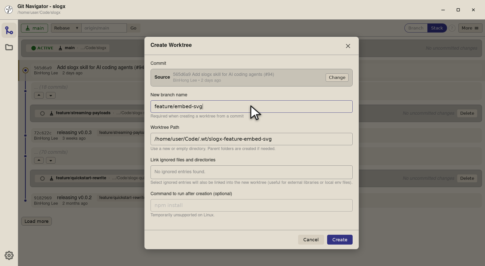
Step 5. Name the new branch. Git Navigator creates it for you as part of git worktree add, so you don't have togit branchfirst. -
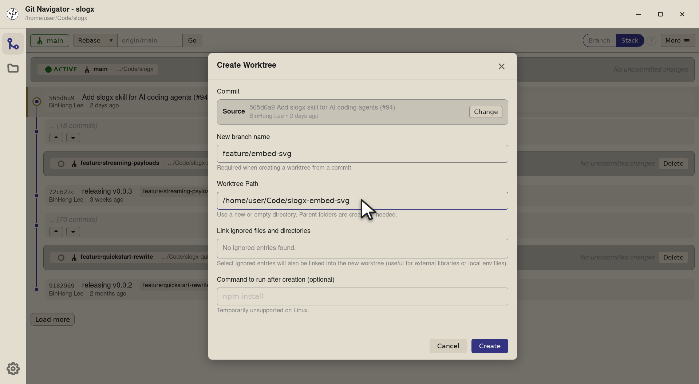
Step 6. Pick a path. Use a fresh directory; parent folders are created for you. Putting linked worktrees as siblings of the main checkout keeps the layout obvious in tools like an editor or shell prompt. -
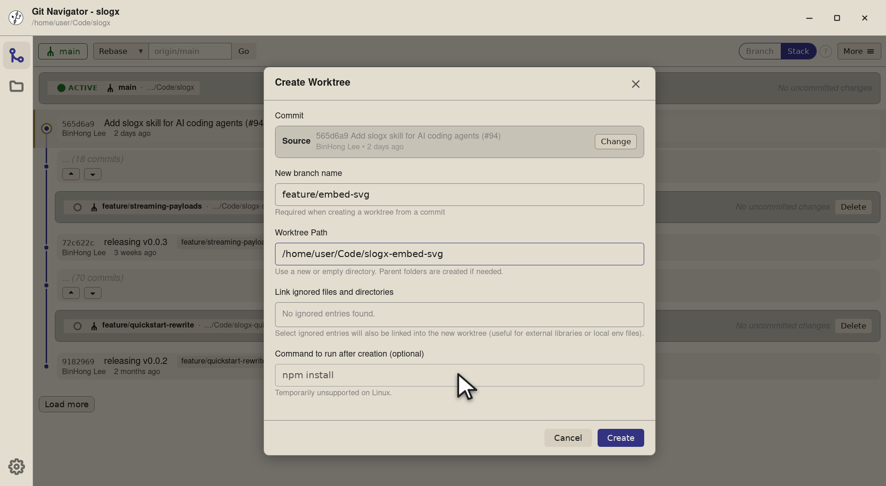
Step 7. Optionally pin a setup command ( npm install,pnpm i,cargo build— whatever your repo needs). Git Navigator runs it in the new worktree once the checkout lands, so the worktree is ready to work in.
-
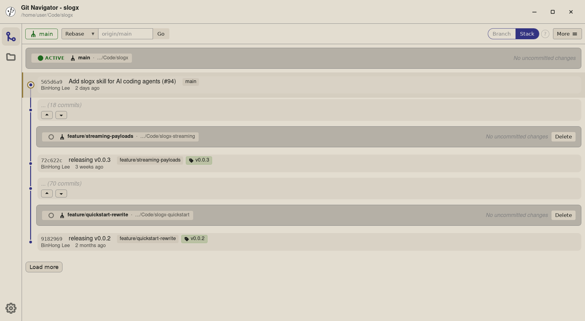
Step 1. Every linked worktree lives as its own row at the top of the graph. The row carries a small radio control — the one that's on is the active worktree, and the graph below it is that worktree's history. -
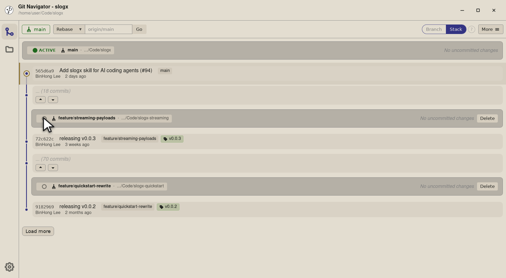
Step 2. To switch, click the radio on any other worktree row. Here we're about to jump to slogx-streaming, which is on thefeature/streaming-payloadsbranch. -
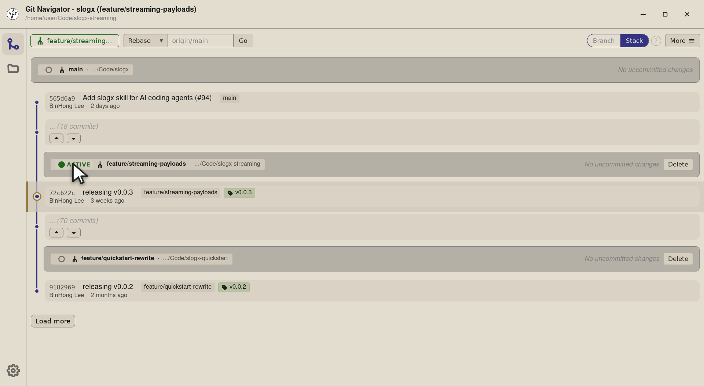
Step 3. The whole window re-targets the new worktree: the header title and path update to slogx (feature/streaming-payloads), the active ACTIVE badge moves to the streaming row, and the graph scrolls to that worktree's HEAD. Uncommitted changes also re-scope to the new checkout.
-
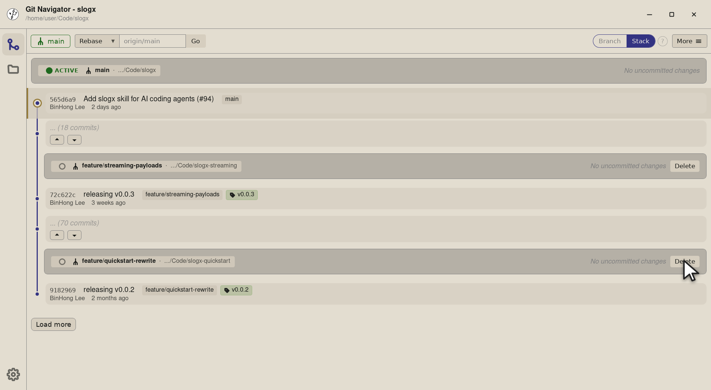
Step 1. Every worktree row carries an inline Delete button at the right edge — no overlay or context menu to dig through. Pick the worktree you're done with. -
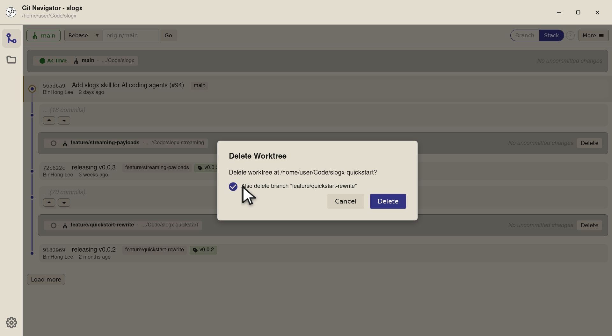
Step 2. Git Navigator opens a confirmation that names the worktree and offers to delete the branch alongside it. Tick the box to clean both up in one step — the hint underneath warns if the branch isn't fully merged. -
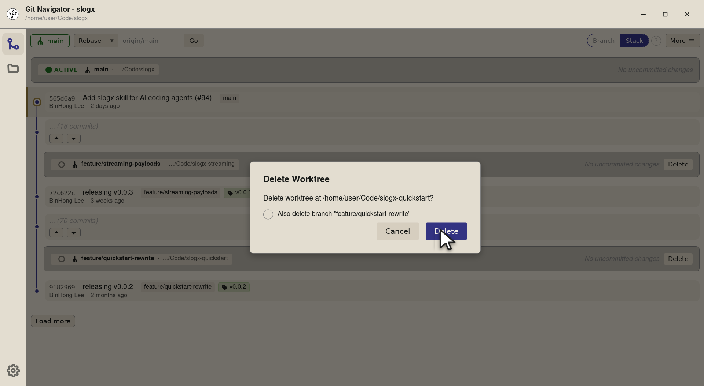
Step 3. Confirm and Git Navigator runs git worktree removeplus (if you opted in)git branch -D. The row disappears from the graph and the repo is back to the worktrees you actually use.
The worktree lifecycle
- Create from any commit. Hover a commit, choose New… → Worktree, fill in the branch name, path, and an optional setup command. Git Navigator runs
git worktree addand your command in the new checkout. - Switch with the radio. Every worktree gets a row at the top of the graph. Click the radio on a non-active row to make it active. The whole window — graph, refs, uncommitted changes — rebuilds around the new checkout.
- Find your way back with the badge. The active-worktree badge in the header always shows the current checkout. Click it from anywhere to scroll back to that worktree's panel.
- Delete when you're done. Open More → Worktrees and choose Delete on a row. The confirmation has an opt-in checkbox to also delete the underlying branch in the same step.
Frequently asked questions
How is a worktree different from a clone?
A linked worktree shares the same .git directory as the main checkout — there's no second copy of the object store or the remotes. It's just a second working tree on a different branch, scoped to the same repository.
Can I have uncommitted changes in two worktrees at once?
Yes. Each worktree has its own working copy and index. Git Navigator scopes the uncommitted-changes panel to the active worktree, so flipping between them shows the right set of dirty files.
What happens to the branch when I delete a worktree?
By default the branch stays put — only the working tree is removed. The delete confirmation has a checkbox to also delete the branch, with a warning if it isn't fully merged, so you can clean both up in one step.
Can I run a setup command after creating a worktree?
Yes. The create dialog has a "Command to run after creation" field — paste your project's setup command (npm install, cargo build, etc.) and Git Navigator runs it in the new worktree once the checkout lands.
Does Git Navigator support worktrees on Windows?
Yes. Git Navigator shells out to your installed Git for worktree operations, so anywhere `git worktree add` works the app's create / switch / delete flows do too — including Windows.